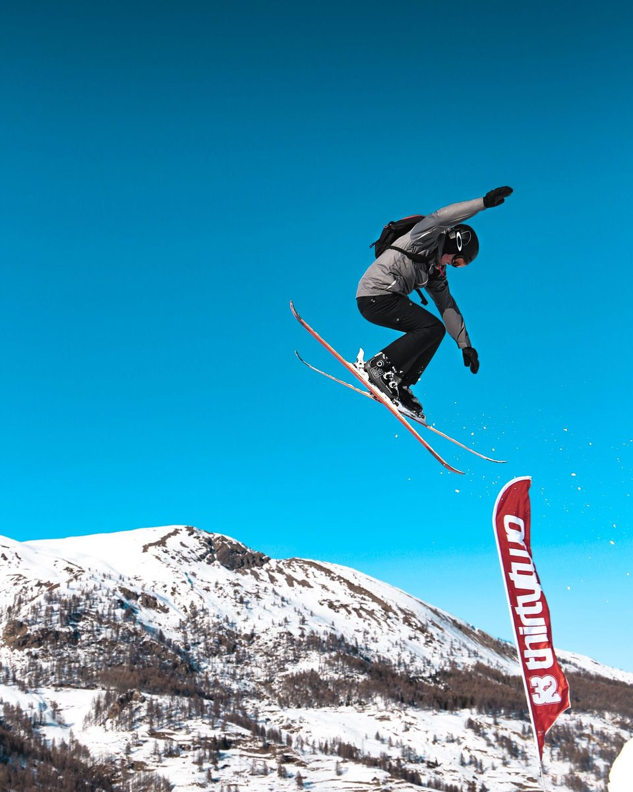
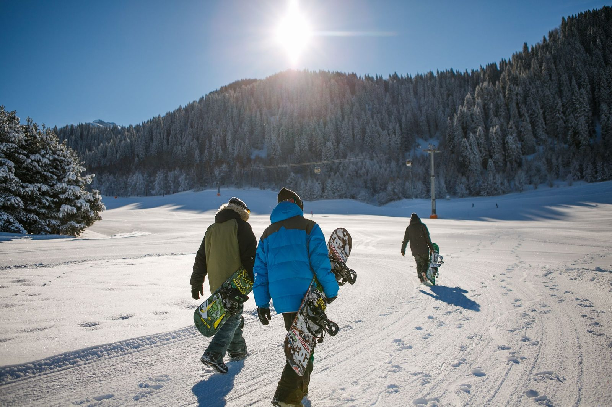
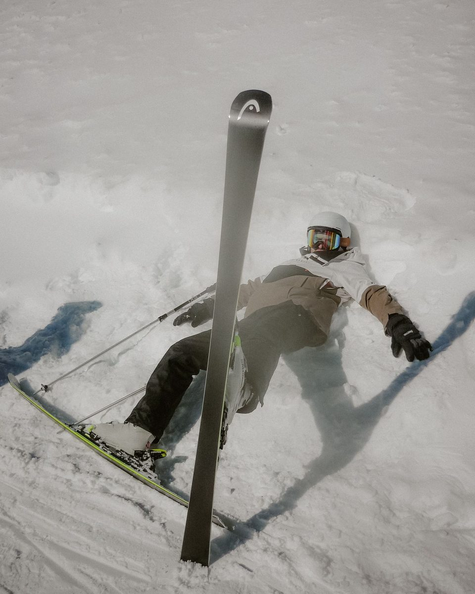
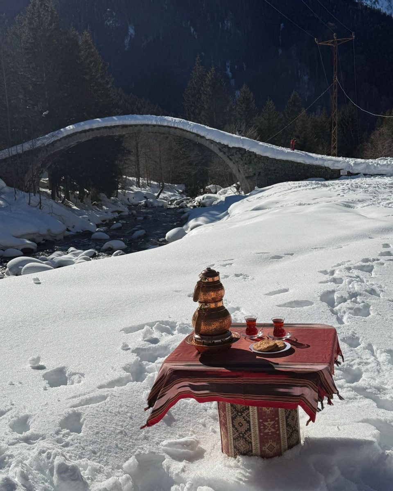
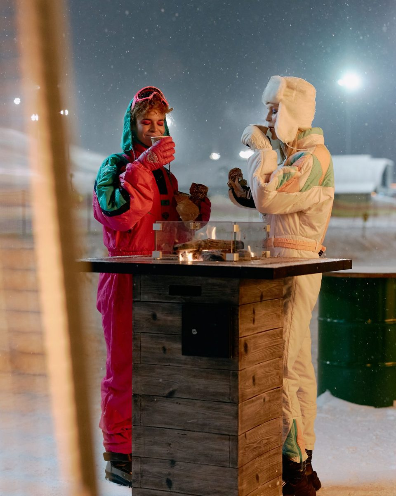
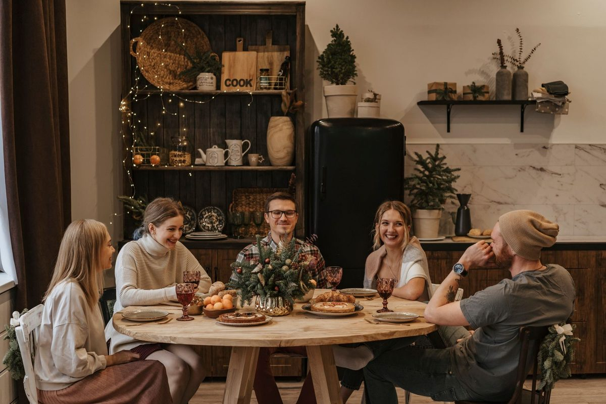
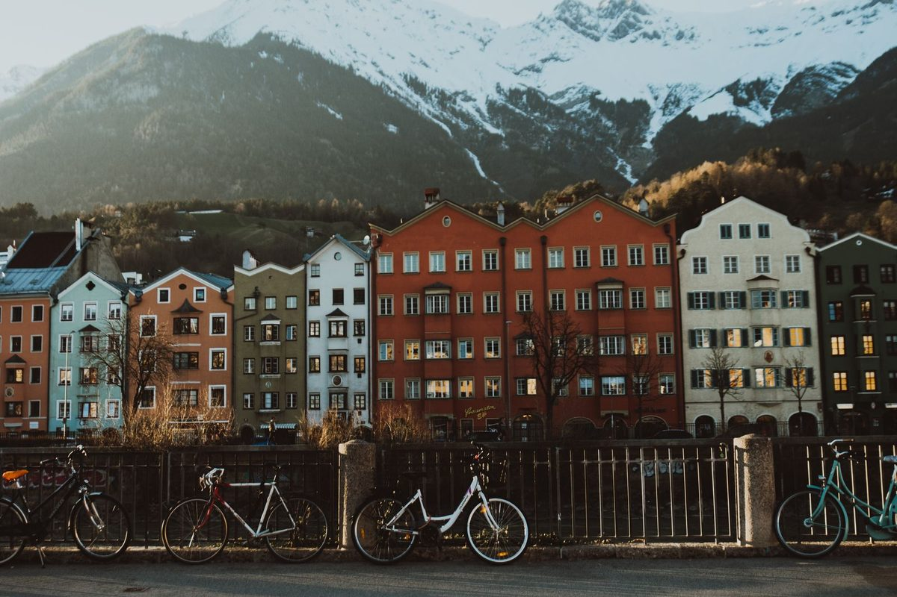

Konzeptbild01 · Ski & Content
Jeden Tag ein neues Erlebnis.
Verschiedene Pisten, Tiefschnee und Bergbahnen – gefilmt von denen, die gerade fahren.

In Planung · Tirol · März 2027
Unsere Creator Ski Week: eine Woche in Tirol, ein Chalet, ausgewählte Creator und Content, der nach Abenteuer aussieht und nicht nach Werbung klingt.
Die Idee
Junge Leute wollen keine Woche im selben Skigebiet. Sie wollen Abwechslung, Abenteuer und Abende, über die man noch lange redet. Genau das bauen wir: eine Woche mit Creatorn aus Action, Travel und Lifestyle statt aus der Ski-Bubble. Ihre Communities folgen ihnen wegen Abenteuer, nicht wegen Pistenkilometern. Da holen wir sie ab.
Die Woche

Konzeptbild01 · Ski & Content
Verschiedene Pisten, Tiefschnee und Bergbahnen – gefilmt von denen, die gerade fahren.

Konzeptbild02 · Wild Activities
Kostüm-Day, Nachtrodeln, Snowbike: Wir wollen „besonders“, nicht Pauschalurlaub.

Konzeptbild03 · Food Moments
Brotzeit auf Skiern, Dinner im Schnee: Momente, die man sofort teilen will.

Konzeptbild04 · Après & Abend
Après, Stadt und lange Abende im Chalet – das Finale gehört der Gruppe.
Warum das funktioniert
Stimmung

Konzeptbild
KonzeptbildAlle Bilder auf dieser Seite sind Konzeptbilder und zeigen die Stimmung, die wir planen. Die echten Fotos gibt es nach der Woche.
Mitmachen
Für Marken & Unternehmen
Ihr wollt eine junge Zielgruppe erreichen, und zwar mit Content, den sie freiwillig anschauen? Wir suchen Partner, die Teil der Woche werden: von Ausrüstung über Unterkunft und Food bis zum Presenting Partner. Wie das konkret aussieht, gestalten wir gemeinsam.
Für Creator
Du liebst Abenteuer und willst eine Woche mit uns in die Berge? Das passt, wenn du:
Bewirb dich auf Instagram: Kommentier unter unserem Aufruf-Post oder schreib uns eine DM.